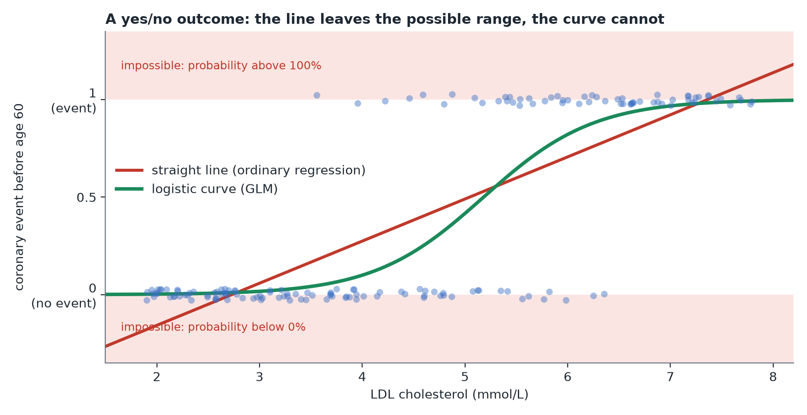

Generalized Linear Models (GLMs)
In plain terms: GLMs are regression's extension to outcomes that aren't a plain continuous number — like yes/no results or counts.
Why plain regression isn't enough for every outcome
Ordinary regression assumes the outcome can be (in principle) any real number, and that the "noise" around the line is roughly bell-shaped. That breaks down for:
- Yes/no outcomes (did the patient recover? did the cells survive?) — a straight line can predict nonsensical values like "120% chance of recovery."
- Counts (number of emergency visits per patient, number of hospital visits) — counts can't be negative, and their spread usually grows with their average, unlike the constant spread plain regression assumes.

The GLM fix
A GLM keeps the "fit a line through predictors" idea, but adds a link function that maps the line onto the right scale for the outcome type:
- Logistic regression: for yes/no outcomes. Models the log-odds of "yes" as a linear function of the predictors, which keeps predicted probabilities between 0 and 1. Coefficients are often reported as odds ratios (e.g. "treated patients had 2.3x the odds of recovery").
- Poisson regression: for counts. Models the log of the expected count as a linear function of the predictors, which keeps predicted counts positive.
Mia and Theo's examples
- Mia records whether each patient had a coronary event before age 60 (yes/no) — logistic regression relates the odds of an event to carrier status (whether the patient carries the gene variant) and age.
- Theo counts how many clinic visits each patient made in a year — Poisson regression relates expected visit count to treatment group and age.
The takeaway
You don't need a different mental model for "a regression for proportions" vs. "a regression for counts" vs. "a regression for plain numbers" — it's the same coefficients-and-predictors idea throughout, just with a different link function chosen to match what kind of outcome you have.